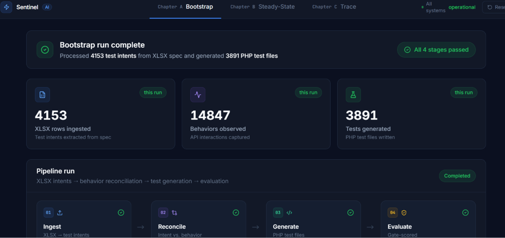

Regression testing is the silent tax on every engineering team. A 6-agent pipeline that understands intent, not just syntax.
AI-generated tests nobody trusted: brittle coverage with no visibility into why the model wrote what it wrote.
A 6-agent pipeline with a self-evaluated test confidence score and a 9-stage trace panel making the reasoning auditable.

As codebases grow, manual test maintenance becomes the slowest part of the software development lifecycle. Existing tools generate tests, but don't understand intent, they produce brittle, low-confidence coverage that developers don't actually trust.
AI-generated tests without confidence scoring create noise. A PM or QA lead reviewing AI-generated tests needs to see why the AI wrote what it wrote, not just the output.
The hard part wasn't producing test code, it was producing test code a team could trust without re-reviewing everything by hand, and keeping that trust intact as the codebase kept changing underneath it.
Sentinel is a 6-agent pipeline: Ingestion parses the regression suite and extracts test intents, Reconciliation maps those intents to the actual code under test, Generation writes tests from intent plus code context, Evaluation scores each generated test for correctness and intent fidelity, Change Impact identifies which tests a code diff affects, and Test Update rewrites affected tests and produces a PR comment explaining what changed and why.
The north-star metric is a test confidence score, the percentage of generated tests that correctly capture the original behavioral intent, evaluated by the AI itself in a self-evaluation loop. That evaluation agent exists specifically to filter low-quality output before it reaches a developer.
I chose to expose agent traces in the UI rather than hide the pipeline behind a clean but opaque result. The Trace panel is a 9-stage vertical timeline making the reasoning auditable, not just the output, which costs UI complexity but is the reason a QA lead would ever actually adopt this over trusting it blindly. Once bootstrapped, Sentinel runs in a steady state: monitoring diffs, re-evaluating affected coverage, and proposing test updates before a PR merges, so the suite stays in sync with the codebase automatically instead of drifting.
Deployed to Vercel with auto-deploy from its GitHub repo, three UI panels (Bootstrap, Steady-State, Trace) shipped end to end. The bigger result is a reusable stance on AI-generated engineering artifacts: never ship a confident-sounding output without a visible reason to trust it.
I'm looking for Senior AI Product Manager roles where the product ships to people who depend on it.
Let's talk →